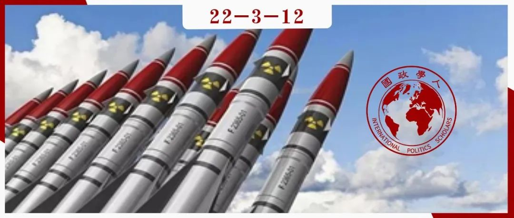

收录于合集

相互竞争的等级制度与核技术共享的起源
作者： Jeff D. Colgan，布朗大学沃森研究所副教授；Nicholas L. Miller，达特茅斯学院政府学助理教授，研究重点为核扩散和国际安全。
编译： 孟晓宇（国政学人编译员，山东大学国际政治专业）
来源： Colgan, Jeff D., and Nicholas L. Miller. “Rival hierarchies and the origins of nuclear technology sharing.” International Studies Quarterly 63.2 (2019): 310-321.

导读
爱因斯坦曾说过：提出一个问题往往比解决一个问题更重要。本文作者敏锐地捕捉到了冷战时期，美苏在核扩散政策演变过程中的不同寻常之处——美苏在主动开展核技术共享之后，又在冷战形势最严峻之际在核保障领域开启了合作，这一政策变化耐人寻味。为解释冷战时期美苏在核扩散政策上的演变原因，作者从 等级制度视角 入手，提出了解释框架。
作者指出，国际社会存在着多个等级制度。 等级制度的垂直结构（即等级制度内部，主导国与追随国之间的互动）以及等级制度间的水平结构（即多个等级制度间的互动）会相互影响。 作者重点关注等级制度间水平结构的重要性，提出了三种相互竞争的等级制度间的互动机制——“竞争性羞辱”“竞价”以及“合作”。为了保障追随国的忠心以及吸引中立国，不同等级制度内的主导国倾向于选择“竞争性羞辱”和“竞价”机制，这两个机制会使各等级制度内部的追随国受益；为了维持自身的地位，主导国之间倾向于合作，这一机制不利于追随国的收益。
基于这一理论框架，作者认为美苏纷纷开启核技术共享是为了“羞辱”对方或是为了在“竞价”中胜出，从而巩固各自的联盟体系；而为了降低核扩散给自身主导地位带来的风险，美苏两国在创建国际原子能机构上实现了合作。本文行文脉络清晰， 第一部分提出等级制度理论框架，第二部分则运用这一框架解释了冷战时期的美苏核政治问题。 在结论中，作者进一步指出了本文对广泛的国际关系研究的重要意义。
编译
20世纪50年代，美国和苏联开始在国际上共享核技术，这无疑会削弱了美苏自身的技术优势，并可能加速核武器的扩散。此后不久，这两个超级大国于冷战的高峰时期合作创建了 国际原子能机构（IAEA） ，以保障核援助，并最终增加了其它不扩散措施。本文旨在解释以上的美苏决定。 作者认为，国际等级制度的动态变化有助于解释美国和苏联在核扩散政策上的演变。
01
理论框架
等级制度（hierarchy）是一个主导国和它的追随国之间的半显性交易网络。主导国为追随国提供利益，通常包括外部保护、贸易关系和意识形态目标的推进；作为交换，追随国将其部分事实上的主权让渡给主导国家。这种交易是半显性的，因为即使有正式的协议存在，它也从来不会完美、精确地阐明交易的所有要素。
主导国面临着与追随国的关系结构问题。一方面，主导国希望最大化其对追随国的控制以及从追随国那里获得的利益，这种讨价还价有利于主导国；另一方面，主导国也希望最大化其等级制度的规模，并将维持对其追随国的控制成本降至最低，而这种讨价还价则有利于追随国获得更多的物质性利益以及话语权。
然而，只关注等级制度的内部动态是片面的，多个等级制度之间也可能发生互动，甚至经常形成竞争态势。但国际等级制度间不仅仅存在竞争，它们也有共同的利益、问题和机会。例如，合作可以保持主导国相对于其他主导国的地位不变，而相对于追随国的地位却有所改善。中立国虽存在于任何等级制度之外，但它们却在等级制度间的互动中扮演着重要角色。因为主导国有动机向潜在的追随国提供相对有吸引力的交易。
作者提出了三种主要机制——竞争性羞辱（competitive shaming）、竞价（outbidding）以及等级制度间合作（interhierarchy cooperation）。通过这些机制，竞争的等级制度间的相互作用会影响等级制度内部的交易。
第一种机制是竞争性羞辱，其通过强调目标国所产生的负面性或国际风险来运作。主导国有动机去破坏对手的合法性从而影响中立国家或者降低对手现有追随国的忠诚度。
第二种机制是竞价。为了吸引和维护追随国，主导国有提供更好的有形或无形利益的动机。主导国家有时也会采取代价高昂的行动，通过地位竞争来建立或巩固自己的合法性，比如冷战时期的太空竞赛。和“竞争性羞辱”一样，“竞价”的最终结果往往会增加追随国在等级内部交易中获得的利益。
第三种机制则是由主导国家之间的共同利益驱动的等级制度间合作。 合作同时影响主导国和追随国之间的垂直等级关系以及两个或多个等级制度间的水平关系。 等级制度间的合作往往会减少追随国从主导国家那里获得的好处。然而， 作者认为只有在保持现状排名或它们之间的关系的情况下，竞争的主导国才会倾向于合作。
作者从以上讨论中延伸出了两个核心假设： 假设一，当竞争的主导国通过羞辱和/或竞价手段相互竞争时，等级制度的内部交易往往会有利于追随国；假设二，当竞争的主导国展开合作时，等级制度的内部交易则不利于追随国。
然而相互竞争的主导国何时选择使用“竞争性羞辱”和“竞价”的手段？什么时候选择合作呢? 作者假设，主要的驱动因素是主导国对国际威胁的感知。 当主导国感受到来自与特定问题领域相关的竞争对手的强大威胁时，它更有可能展开竞争。当主导国感知到与这个特定问题领域相关的追随国的强大威胁时，它更有可能与竞争的主导国合作。威胁感知的变化改变了主导国间合作或竞争的倾向。
02
冷战核政治中的竞争等级制度
德怀特·艾森豪威尔（Dwight David Eisenhower）总统的1953年“和平利用原子能计划”（Atoms for Peace program）开启了国际核技术转让时代。这一政策主要是为了反对苏联，并导致了美国向追随国或中立国大规模提供核技术。不仅如此，这一政策还刺激了苏联类似的计划，并为国际原子能机构（IAEA）的创建奠定了基础。 考虑到潜在的核扩散风险，美国和苏联为什么要与追随国和不结盟的国家分享核技术呢？
1．竞争性羞辱
美国“和平利用原子能计划”和更广泛的核技术共享政策的出现，是为了回应苏联对美国依赖核武器的羞辱。因为美国在其防御战略中更加依赖核武器，所以使美国核武器失去合法性是符合苏联利益的。这种竞争性羞辱为美国的追随国和潜在追随国带来了更有利的交易，因为华盛顿变得乐于在核技术方面提供援助，这与“假设一”一致。1953年12月，艾森豪威尔在联合国发表了“和平的原子”演讲，他建议核国家向一个国际机构（即以后的国际原子能机构）提供裂变材料，这将保障这些材料被用于和平发展，而不是制造核武器。用于和平目的的核项目将提供切实的证据，驳斥苏联一再提出的指控，即美国只对原子能的破坏性方面感兴趣，而苏联一直为和平目的发展它。 艾森豪威尔的提议是对苏联几乎垄断“和平”宣传的直接挑战。 苏联对美国的羞辱使美国的追随国和潜在的追随国第一次得到了核技术。
2.竞价
苏联对美国通过提供核技术来加强联盟并吸引新盟友的努力做出了回应。在艾森豪威尔的演讲后不久，莫斯科就决定将利用自己的核合作项目来与美国抗衡。莫斯科在1955年向中国、捷克斯洛伐克、匈牙利和东德提供了核援助，随后在1956年亦向南斯拉夫和埃及提供了核援助。而作为一种反馈效应，苏联分享核技术的举动进一步促使美国的核计划。美国官员担心苏联将很快向主要的不结盟国家提供核援助，从而在冷战的关键领域中取得优势。 因此，美苏两国均试图在核援助数量或质量上超越对方，这一相互竞价的过程导致了追随国讨价还价的提高。
例如，美苏两国争夺的一个关键目标就是印度。印度有意利用这种出价过高的势头，在印度官员开始与苏联讨论核合作后，他们告知美国官员苏联可以提供什么，以便获得更好的交易。20世纪50年代的南斯拉夫也出现了类似的情况，当时两个超级大国都希望将其拉进自己的势力范围。美国官员意识到，南斯拉夫试图操纵竞价使其对自身有利，但仍然寻求最大限度地使南斯拉夫倾向于自由世界，并尽量避免其向苏联轨道靠拢。
3.等级制度间的合作
尽管美国官员希望通过核合作项目赢得宣传胜利，支持或吸引盟友， 但他们也明白，为了将核扩散风险降到最低，有必要采取安全措施。让国际原子能机构负责保障措施之所以受到美国官员的欢迎，部分原因是他们认为， 在政治上，多边基础上的控制可能比单边基础上的控制更容易被接受。 苏联和美国一样担心核武器扩散，这促使他们最初反对艾森豪威尔的“和平利用原子能计划”。但苏联担心美国会在该领域处于主导地位，因此在构建国际原子能机构问题上逐渐变得更加合作，最终签署并批准了国际原子能机构。 从等级制度的角度来看，国际原子能机构的规约有三个关键之处 ：第一，尽管IAEA理事会在不遵守协议的情况下可以暂停IAEA的直接援助，但只有联合国安理会有权对违反保障承诺的政府实施更广泛的制裁。由于美国和苏联在安理会都有否决权，这有助于维护他们的地位。第二，它确立了保障原则来约束核受援国，尽管印度和许多其他发展中国家表示抗议，认为这种控制是一种帝国主义形式和对主权的侵犯。第三，虽然该规约为受援国提供了约束，但对超级大国的要求很少。国际原子能机构只需要美苏做出“最少的承诺”。
国际原子能机构通过并加强核保障制度，限制了追随国将进口核技术用于军事目的的能力，从而有利于超级大国而非追随国。在美国和苏联的竞争性羞辱和竞价机制下，追随国获得核技术；而日益严格的核保障措施的发展却限制了追随国的自主权。
03
结论
如果不明晰各等级制度之间的竞争与合作的复杂组合，就无法理解国际等级制度内部的讨价还价行为。冷战期间分享核技术的证据支持了这一论点的合理性。本文论点对更广泛的国际关系研究有四个重要意义：
首先，本文论点进一步挑战了以无政府状态为特征的国际关系观，因为等级制度既为追随国家提供了讨价还价的机会，也附加了约束。第二，本文粗略地提到了大国竞争对等级制度的影响，并将其视为对主导国行为的约束（因为追随国可能会叛变）。主导国有时也会相互合作，以巩固其相对于各自追随国的地位。第三，竞争中的羞辱和竞价机制，有助于解释追随国如何获得更多的利益。那么，这意味着处于单极地位时，主导国并不太担心追随国的忠诚。2003年美国几乎没有面临等级制度竞争的事实，因此也没有什么理由担心其盟友的忠诚。如果多极化在未来几年扎根，随着与对手的竞争加剧，美国盟友将获得更大的好处。
第四，等级制度间的动态改变了我们对国际合作和机制的理解。从某种意义上说，像国际原子能机构这样的机构代表着一种双重讨价还价的过程:一种是在相互竞争的主导国之间，另一种是在每个主导国及其追随国之间。传统的制度合作理论侧重于第一种模式，却忽略了第二个讨价还价的过程。等级制度至少在两个方面对国际合作至关重要。首先，等级制度有助于产生共同利益，从而推动主导国之间的合作:每个主导国都希望增加对追随国的控制，或降低控制的成本。其次，每个主导国家扩大其统治阶层的愿望显著地影响了其合作的可接受的讨价还价范围。因此等级制度间的动态变化既能抑制也能促进国际合作和制度形成。
词汇整理
附庸国 client states
追随国 subordinate states
等级制度 hierarchy
违约行为；不服从 noncompliance
审校 | 杨影淇 阮镇炜 丁伟航
排版 | 何婕 刘美彤 顾金源
文章观点不代表本平台观点，本平台评译分享的文章均出于专业学习之用, 不以任何盈利为目的，内容主要呈现对原文的介绍，原文内容请通过各高校购买的数据库自行下载。

国政学人
支持学术公益与知识传播
微信扫一扫赞赏作者 __赞赏
已喜欢，对作者说句悄悄话
取消 __
发送给作者
发送
最多40字，当前共字
上一页 1/3 下一页
长按二维码向我转账
支持学术公益与知识传播
受苹果公司新规定影响，微信 iOS 版的赞赏功能被关闭，可通过二维码转账支持公众号。